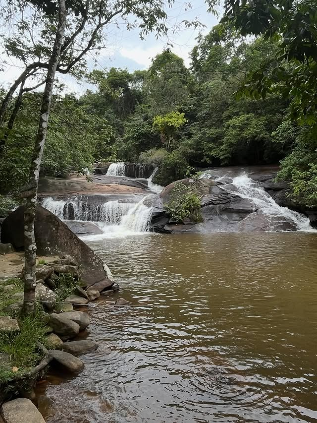
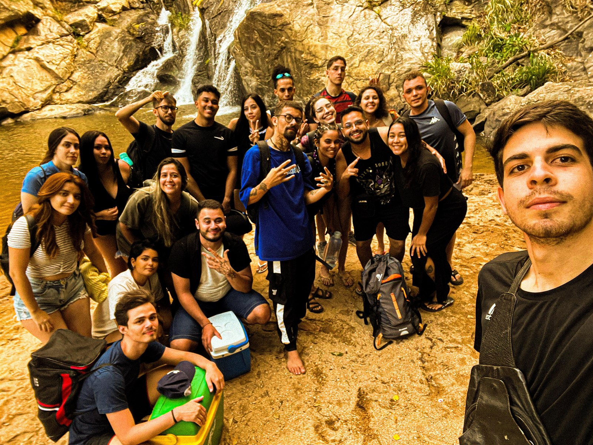
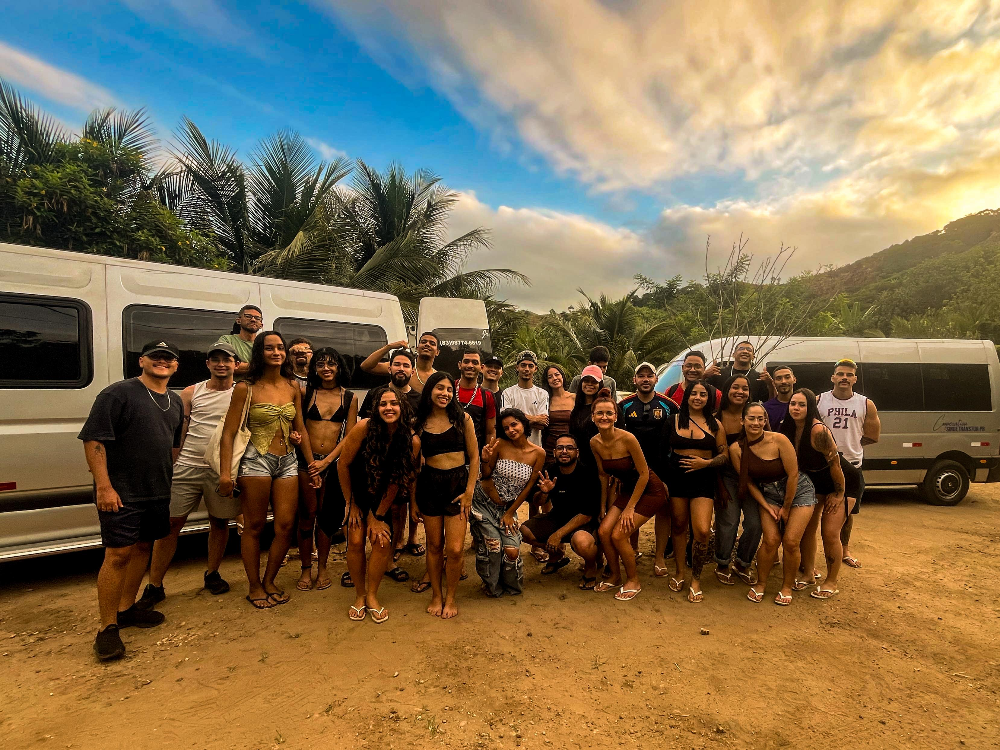
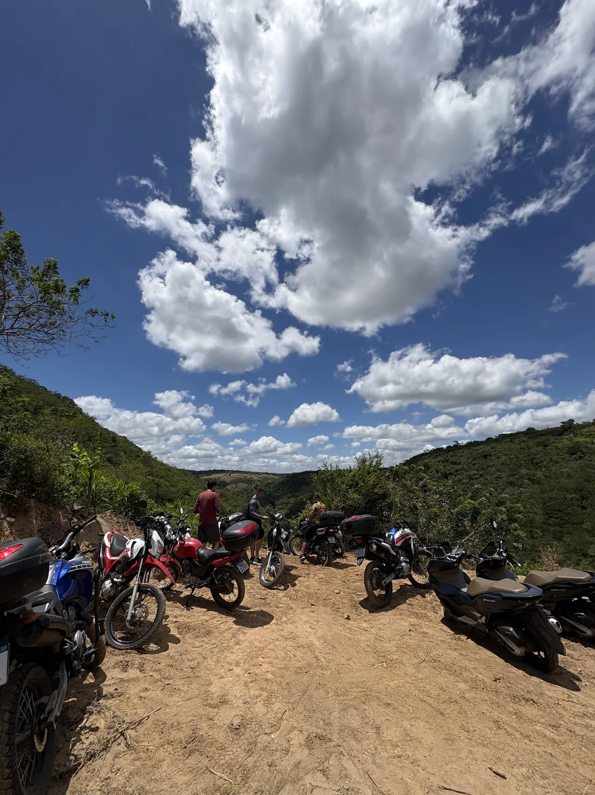
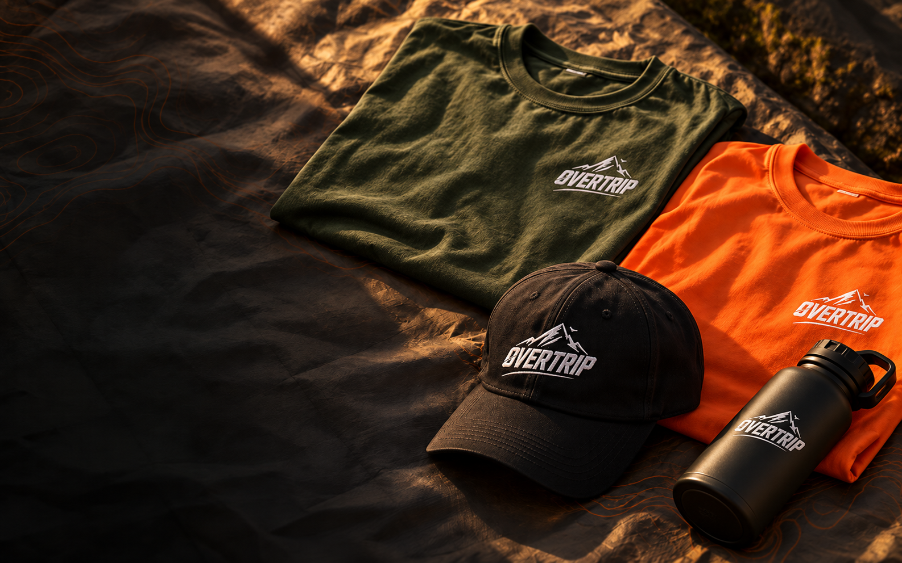

01
OVERTRIP Expeditions
Experiências autorais com logística, curadoria e presença real.
Ver próximas tripsECOTURISMO & AVENTURA, TURISMO CULTURAL E EXPERIÊNCIAS
A OVERTRIP é uma agência de ecoturismo e aventura, turismo cultural e experiências, que também reúne uma comunidade de pessoas conectadas por viagens, natureza e estrada.

OVERTRIP Expeditions
Consultando próximas datas
Sua próxima experiência em três passos.
Escolha
Rota, logística, paradas e ritmo pensados para transformar uma viagem simples em memória coletiva.
Na prática Ver as próximas trips →
Reserve
Vagas limitadas para manter uma experiência mais organizada, próxima e com tempo para aproveitar cada momento.
Na prática Reserva com 50%, o restante até 48h antes. Pix ou cartão.
Embarque
Aproveite a viagem, conheça gente nova e descubra lugares. O resto continua muito depois de você voltar pra casa.
Na prática Transporte, organização e curadoria da experiência incluídos.
Sobre a OVERTRIP
A OVERTRIP começou em 2022 entre amigos que decidiram viajar de um jeito diferente. Pouco roteiro, muita presença.
O destino nunca foi o ponto. O que importava era o que acontecia no caminho.
Hoje, a OVERTRIP reúne pessoas que acreditam que viajar também é conhecer gente, criar histórias e viver experiências que continuam depois da volta.
Nossa história
Um grupo de amigos decide sair da rotina e viajar de um jeito diferente. Nasce a ideia que, pouco tempo depois, daria origem à CG.TRIP.
As primeiras viagens reúnem novas pessoas e a comunidade começa a crescer.
A CG.TRIP amplia seus roteiros, cruza as fronteiras da Paraíba e leva experiências para novos destinos no Nordeste.
O projeto dá mais um passo com o início da formação técnica em Guia de Turismo, fortalecendo a organização, a segurança e a qualidade das experiências.
Depois de anos construindo uma comunidade, a CG.TRIP evolui para OVERTRIP. Uma agência criada para unir experiências, turismo, comunidade e um estilo de vida movido pela estrada.
Rotas até aqui
Cada ponto no mapa é uma memória coletiva. Clique nos marcadores ou na lista pra explorar os destinos visitados saindo de Campina Grande ou Pocinhos - PB.
Universo OVERTRIP
A OVERTRIP reúne experiências, comunidade e produtos para quem acredita que viajar também é um estilo de vida.

Experiências autorais com logística, curadoria e presença real.
Ver próximas trips
A comunidade de quem embarca junto, troca rota, cria história e não some depois que a viagem termina.
Entrar no grupo
Motos, carros e estrada off-road. O braço da OVERTRIP pra quem prefere pilotar o próprio caminho, em grupo e com pegada de aventura.
Conhecer a OVER RIDERS
Produtos para levar a identidade da marca para fora da estrada: camisetas, bonés, garrafas e acessórios.
Galeria - Memória OVERTRIP
Histórias de quem já embarcou.
Relatos de quem já embarcou e entendeu que a experiência vai além do destino.
FAQ rápido
As perguntas que mais aparecem no nosso WhatsApp. Se a sua não está aí, é só chamar.
Tirar dúvida no WhatsAppPode sim. As experiências são pensadas para acolher quem chega sozinho(a), em casal ou com amigos. Antes do embarque, a organização aproxima o grupo e passa as informações principais.
Quero entender melhorA reserva é feita com 50% do valor da experiência. O restante deve ser quitado até 48h antes do embarque. Aceitamos PIX e cartão; pagamentos no cartão podem ter acréscimo de taxas/juros da operadora.
Reservar agoraInclui transporte, organização e curadoria da experiência. Alimentação, entradas ou itens extras são informados antes da reserva.
Ver detalhes da próximaCada expedição tem um nível de intensidade. Antes da reserva, informamos se a experiência é leve, moderada ou exige mais preparo físico.
Falar com a organizaçãoA política de desistência considera a proximidade do embarque e os custos de organização, logística e parceiros já assumidos. Após o pagamento de 50% referente à reserva, não realizamos reembolsos. Situações excepcionais, como problemas de saúde comprovados, são analisadas individualmente. Se precisar tratar de uma situação específica, posso direcionar ao nosso time responsável.
Entender a políticaA estrada começa aqui
Veja as próximas experiências e faça parte da comunidade OVERTRIP.
Dúvidas sobre o próximo embarque? Chame a nossa equipe no WhatsApp!